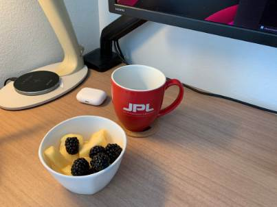
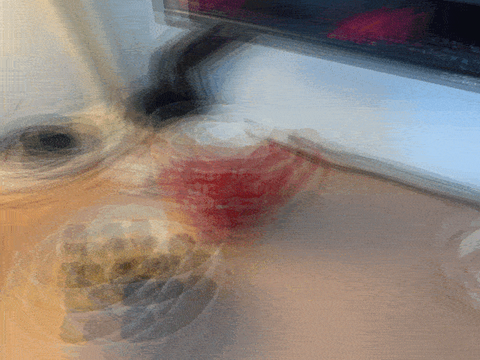
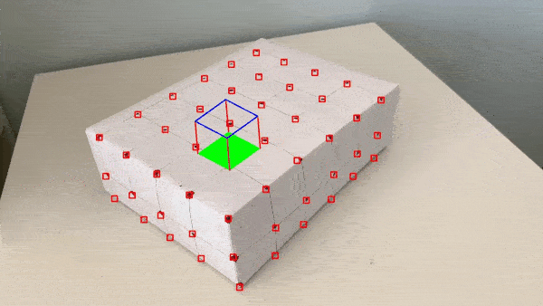

William Loo
In this project, I used light field image data from the The Stanford Light Field Archive to achieve depth refocusing and aperture adjustment . The implementation of this project draws inspiration from this paper.
To achieve depth refocusing, I first experiment by shifting the images by a pair of x,y shifting value determined by the first two values in the filenames of the data provided by the lightfield archive, and average the images together.
By multiplying a scaling value to the x,y shifts from the filename, and then combining all the shifted images together. I can achieve depth refocusing and create images with clarity on certain depths in the scene. For every depth refocusing operation, I use all of the images provided by the data.
Here are a few refocusing examples using a set of images of a chessboard from the lightfield data: (from left to right: REFOCUSED FAR (scale=0), REFOCUSED MIDDLE (scale=1.6), REFOCUSED NEAR (scale= 3.2))

Here are three GIFs depicting the results of depth refocusing from back to front:
^ scale: [0 , 3]
^ scale: [-5 , 1]
^ scale: [-2 , 3]
From our previous observations, combining images together allows us to focus on which areas to highlight or blur, since objects far away from the camera do not vary their position significantly when the camera moves around while keeping the optical axis direction unchanged. To perform aperture adjustment, I choose a radius value used to select which photos are used in the averaging, and the resulting combined images will simulate different aperture values.
In terms of how the radius value is used, candidate images are selected based on the x,y shift values from center mentioned in the previous section, and if the x,y shift values from the center of the image is within the radius I chose, it will be selected to be combined with other images satisfying this criteria to create the image with a simulated aperture. The simulated apertures may cause the center of the image to blur, because the different apertures will all focus on where the starting location of the grid would be (this is where the focus was when we combined all of the shifted images with scale=0 in the previous section). For chess, the focus for all apertures will be at the top portion of the image.
Here are some results:
This project was fascinating because it taught me to look under the hood of yet another computational photography method that I've seen before.
In the Portrait mode feature of the iPhone camera, the aperture could be digitally adjusted like I just did in this project.
I attempted to generate my own set of images to be used with my refocus and aperture simulation. I took 9 pictures with even shifts horizontally and vertically. Here is what they look like:

Here are the results of the refocus and aperture simulation:


I attribute the apparent failure to misaligned images. A gantry was used in the original lightfield data I used above, which allowed for precise measurements. In this case I didn't have a gantry but used a tripod to the best of my abilities. Many more images to the order of 289 images may be needed to properly perform the adjustment, instead of 9 images.
I start with a video of a box with some evenly spaced points.
I manually record the location of 50 keypoints in the first frame of the video along with their corresponding 3D world coordinates. Shown below are the locations of the keypoints along with the axes used to determine x,y,z positions. The origin (0,0,0) is marked in red, at the intersection of the axes. All points are 1 unit apart from each other in 3D world coordinates.
I used the MedianFlow tracker, as detailed in this article, and as suggested by the project spec. The bounding box size used by the tracker is 20px. Here are the results of tracking and propagating the keypoints to the other frames of the video.
I project a cube with vertices defined at (1,1,2), (1,2,2), (2,2,2), (2,1,2), (1,1,3), (1,2,3),(2,2,3), (2,1,3). I take these vertices and convert them from 3D world coordinates into camera pixel positions using a camera projection matrix. The camera projection matrix was calculated using a least squares technique between the normalized camera pixel coordinates and the normalized 3D world coordinates. Here are the results of projecting the cube.

The problem seen appears to be attributed to the tracker (see how the bounding boxes explode near the end). I read further about the MedianFlow tracker and learned that while it has good runtime and excellent tracking where the motion is well defined and when the scene has no occlusion, this seems to suggest that MedianFlow is meant for videos recorded in more strictly controlled environments.
I recorded the video without a gimbal and without post-processing, so the camera shakes a bit. More notable is the fact that an entire plane of points on one side of the box gets occluded after the camera pans a bit too far near the end of the video. Soon after that surface is occluded is when the bounding boxes exploded.
I experimented with a few more trackers, with the criteria that it should perform well despite occlusions, variable lighting, and the placement of identical features next to each other. I selected the CSR (Discriminative Correlation Filter with Channel and Spatial Reliability) Tracker, which uses a spatial reliability map to improve the tracking. It does have a longer runtime, but the results are more stable and robust to occlusion.
To further strengthen my implementation, I performed some keypoint filtering if the bounding boxes for a keypoint gets too large or if the keypoints can no longer be tracked. After filtering, only the keypoints (and their corresponding 3D coordinates) which satisfy the tracking and precision metrics are used in the calculation of the camera projection matrix. This improved the performance of the AR projection because any outliers would have been removed.
Here are the results with improvements implemented:

It's also cool to once again learn about the inner workings of a well-known feature we've enjoyed before, like Snapchat's AR filters feature.
This was my favorite project because the resulting projection was responsive to real-world changes in camera movement and gave me many ideas for improvement, but honestly all of the projects I've worked on this semester have been my favorite at some point.
In closing, I enjoyed this opportunity to take CS194-26, as it has prepared me well by giving me and idea of topics to explore in graduate studies, as well as provide a foundation on which to learn for the future.